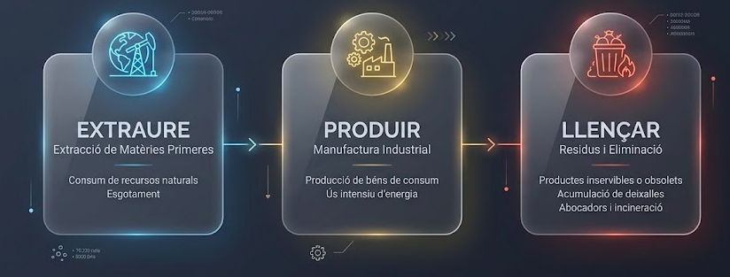

1. El Cicle "Extraure - Produir - Llençar"
Aquest model es basa en una seqüència directa i sense retorn:

- Extraure: Es prenen matèries primeres de la natura (fusta, petroli, minerals) com si fossin infinites.
- Produir: Es fabriquen productes utilitzant energia i generant contaminació durant el procés.
- Llençar: Quan el producte ja no s'utilitza o es fa malbé, es llença com a residu sense recuperar els seus materials.